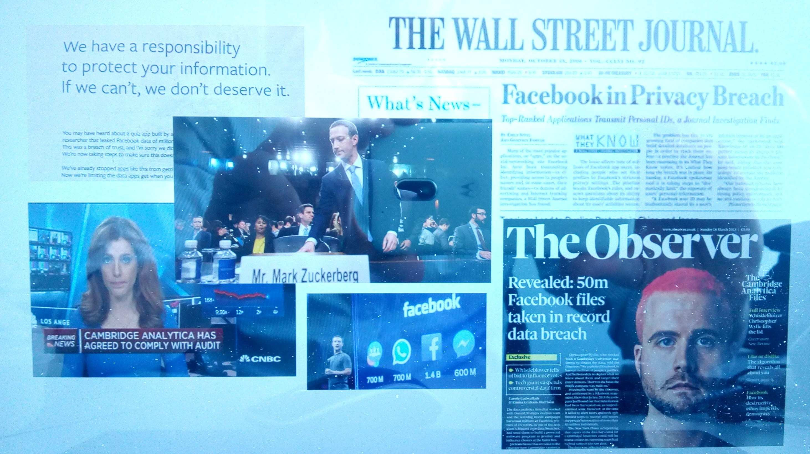
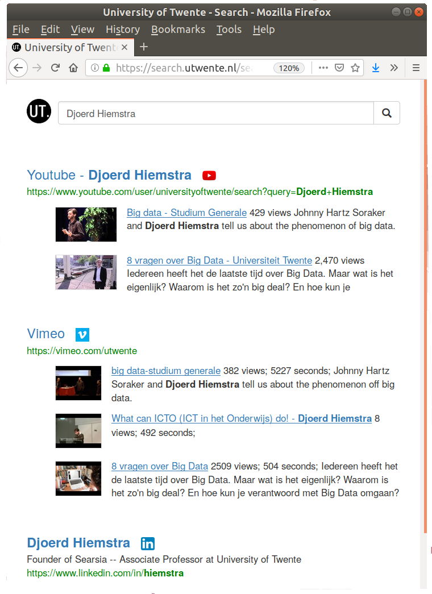
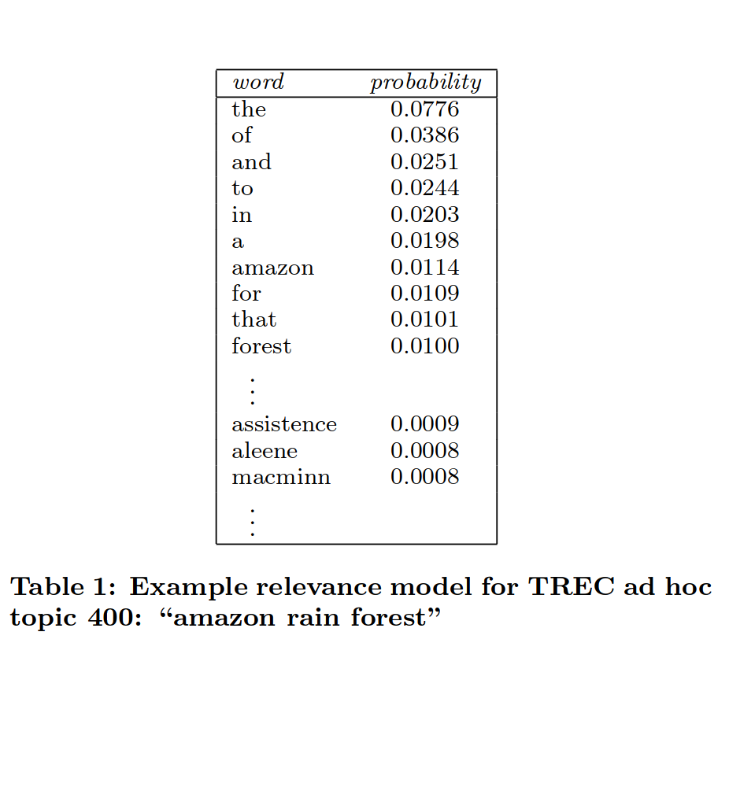

Cambridge Analytica scandal

Weapons of math destruction
- Cathy O'Neil (2016).
Weapons of math destruction: How big data
increases inequality and threatens democracy.
Crown Random House.
- damage
- (large-)scale
- opaque
Responsible Data Science
- awareness
- small-scale
- transparent
Theme 1: Awareness
Open, technology-driven teaching
Theme 2: Small-scale
Federated Search
Merging as learning-to-rank reranking

- Niek Tax, Sander Bockting, and Djoerd Hiemstra (2015).
A cross-benchmark comparison of 87 learning to rank methods,
Information Processing and Management 51(6)
- Djoerd Hiemstra, Claudia Hauff, Leif Azzopardi (2017).
Exploring the Query Halo Effect in Site Search: Leading People to Longer Queries,
In: Proceedings of ACM SIGIR 2017
Theme 3: Transparency
Transparent retrieval & recommendations
Explainable Information Retrieval

-
Suzan Verberne, Maya Sappelli, Djoerd Hiemstra, and Wessel Kraaij (2016).
Evaluation and analysis of term scoring methods for term extraction.
In: Information Retrieval 19(5)
-
Mostafa Dehghani, Hosein Azarbonyad, Jaap Kamps, Djoerd Hiemstra, and Maarten Marx (2016).
Luhn Revisited: Significant Words Language Models. In:
Proceedings of ACM CIKM 2016
Probabilistic deep learning:
- The vector model is back(!)
- Problem: Examples of successful deep learning NLP approaches use "non-probabilistic elements" (cosine similarity, negative sampling, feed forward neural networks, learning rates, etc.)
- Challenge: Formulate alternative -- probabilistic, generative -- alternatives to such approaches
- Language models have improved... a lot!
- Problem: Big preformance improvements in speech recognition, machine translation, do not carry over to information retrieval
- Challenge: "New language models for IR" instead of "Neural IR"
/